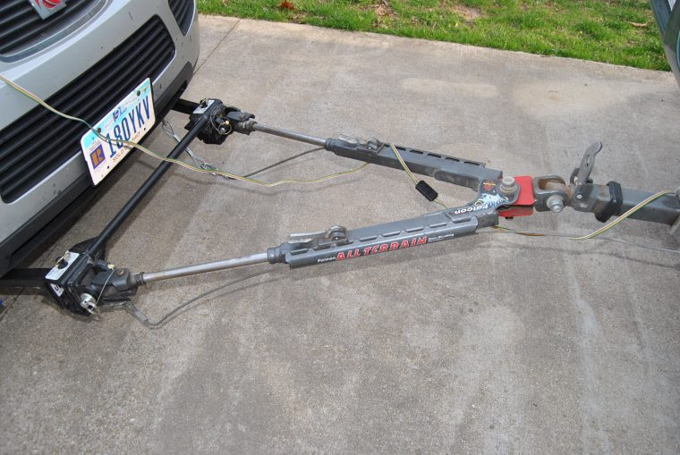

While we were in Yuma for a few days getting a new bra made and installed for the front of the coach (to protect the paint from flying stones and road debris), we noticed the coach transmission was slipping only occasionally when shifting from 4th to 5th gear. It happened three times over a three day period. Oh Crap …
I went to my good friends (Google and You Tube) and discovered that Allison (Transmissions) recommends trans fluid change (along with filters) every 40,000 miles or four years.
We’ve had our rig five years now and have put 60,000 miles on it. It was already 15 years old with 40,000 milles when we bought it. Guess I better get on the stick, eh?
So we went on up I-10 about 30 miles to Velocity Truck Center where they are both Freightliner and Allison Certified shops. We got in the evening before so we could be at the door at 7am when they opened.
Ready for first thing in the morning
We checked in at 7 and then ran a few small errands while we were “in the big city”.
Velocity Truck Center Chandler AZ
Besides eating the previous night’s dinner at the great little family owned Italian restaurant, and breakfast the next day at Waffle House, we still needed to kill some time before the coach would be ready.
My BLT Jalapeno Sub
Kathy’s Margarita Pizza
Great dinner the night before
Drug store, jewelry store, coffee shop, and then what? Neither one of us are used to just having nothing to do so we Googled “Things to do near me” and found the Eddie Basha Art Gallery.
I could tell Kathy wanted to go and it would be a good way to kill off a couple of hours. I figured if I found it to be not exactly my cup of tea, they must have a seat or bench I could relax on and check emails, Facebook and such.
But WOW what a collection! Eddie Basha (1932-2013) was the fourth generation of Lebanese immagrants that owned and operated the family grocery store chain that started as one store and has grown to over 130 stores with 9000+ employees here in Arizona.
The gallery is Eddie’s private collection that the family continues to display free of charge to the public. The collection is mostly early western American (cowboy) art and early native American art.
It includes very large assortments of bronze castings, wood sculpture, oil paintings, stone sculpture, and woven baskets.
The picture gallery below shows just SOME of the hallways and alcoves dedicated to various artists
Eddie’s real joy in collecting these pieces was that he was often able to meet the artist personally and he took pride in developing life-long relationships with many of them.
So if you find yourself in the Phoenix are with a few hours available, we both highly recommend that you visit the gallery located inside the Basha’s corporate office in Chandler.
We left Dale Hollow on Thursday July 1st and headed to Lexington Kentucky Camping World. We had made arrangements ahead of time to buy and install a new Sleep Number bed there because it’s priced at $300 below the price at the Sleep Number store. Further, if we ordered it from Sleep Number direct online, there would be no way to get rid of our old mattress.
Alex at Camping World of Georgetown (north side of Lexington) was great. He had the boxes ready and waiting for us. He and I pulled our old mattress out of the coach and got it into his dumpster and he and another young fella brought the two large boxes into the coach for us. Then it was our job to figure out how it went together.
Not a lot of room to work – See how Kathy’s a little flustered?
It had been raining all the way up to Lex from Dale Hollow and was still raining hard at Camping World. We just parked in the lot, fired up the diesel generator, turned both a/c units on high, and dug into the instructions. It took us about two hours to get everything hooked up and inflated since we had to read the instructions and we didn’t have much room to unpack things in the confines of the coach. But now that we are “experienced professionals” we can install yours in likely less than an hour!
Our plan was to move the coach down the street to Cracker Barrel where there is RV parking. We’d have our dinner there, spend the night, have a good breakfast before heading on up to Ohio.
As we pulled down the Camping World driveway to head around the corner to Cracker Barrel, the coach lurched and slammed to an immediate stop. It was as if we hit a brick wall! But I was able to put it in neutral and re-start the coach. It idled fine and we were able to make it the two blocks to Cracker Barrel.
In the Cracker Barrel parking lot for the night w/ all the other RV’ers
HAH! The best made plans ….
We went on into CB for a Comfort Food dinner as we were feeling kind of nervous about what was to come in the morning.
Kathy’s dinner of turkey and dressing and my chicken pot pie
We stayed the night comfortably although I was thinking all sorts of terrible things about transmission (expensive) and engine (super expensive) problems that could be diagnosed.
I needed to do some research on what the problem was and try to figure out what the next step should be in the morning. I went to my favorite source of information for all things technical related to RV’s. It’s www.irv2.com. irv2.com is an owners forum that has a whole host of sub-forums that are specifically focused on; brands and types of RV’s, areas of interest (i.e. appliances, heating/cooling, solar, body/paint, technology, drive trains, engine types/brands, and transmissions)
I decided that this seemed to be a transmission problem because the shifter panel (It’s an Allison 3000 electronic transmission) showed a flashing “X” instead of “D” or “N”.
Within the Allison transmission sub-forum I found where an owner had posted that the transmission needs a good clean 12.6 volts to the TCU (Transmission Control Unit (Computer)) in order to operate. When the coach would shudder to a halt, all the warning lights on the dash would light up like a Christmas tree. They blink erratically along with the warning buzzers and chimes sounding erratically. It acted like a dead battery problem although I was always able to restart the engine.
Thanks again to irv2, I found the Allison diagnostic routine and trouble codes published online. The procedure produced a Code 35 which told me that the TCU had a “power interuption”. This further confirmed my suspicion that the problem was most likely a loose or corroded connection somewhere between the battery box and the TCU.
In the morning I made a couple phone calls and talked with Freightliner in Lexington and they told me that there was an Allison dealer just up the road about 4 miles from where we were parked at Cracker Barrel. I called them (Clarke Power Services), talked with Steve in their Service Department and told him we’d try to limp up to see him.
Turned out we couldn’t make it more than just out of the Cracker Barrel parking lot and just started to turn the corner into State Route 60 when we crapped out again.
I called our Escapees RV Club Roadside Assistance Service and they sent out Roberts Heavy Duty Towing to take us down the road to Clarke Power Service.
Although we had to wait a couple hours for the tow truck to arrive, the time spent wasn’t a total loss. We used this time to move some things we’d need over the next week or so from the coach into the car. We had to copmpletely empty the fridge and freezer into our cooler and cold bags. We had to pack a few clothes, all our meds, important papers, cell phone chargers. Being that we didn’t really KNOW how long we would be homeless made the “take with” list a little difficult to determine. We used the rest of the time, walking back into Cracker Barrel for breakfast!
CB’s yummy Breakfast Scramble with ham, bacon, & taters
We had a pleasant surpise while we were eating breakfast. The waitress came up to our table (as we were finishing eating) to tell us that our meals were paid for. Turns out, when Kathy went to the ladies room earlier, another customer commented on her Glacier National Park shirt. The lady said they used to live out that way. As they talked, Kathy told her about the mechanical problems we were having and that we’re waiting on the tow truck. They told the waitress that they wanted to pay our bill and then they left so we didn’t get an opportunity to thank them so we’re doing it here – Thank You so much!
WOW – Fast Service!
Steve from Clarke Power Services emailed me this morning to let me know the coach is fixed. The technician found a junction box mounted along the frame that had worked loose and the wires inside were corroded and loose as well. He repaired the junction and placed the wiring into a new box and tested. All is well in the world.
We’ll head on down to pick it up and get it back here to Ohio. My hip replacement surgery is scheduled for July 22nd and the doc says it’ll be a couple weeks long recovery until I’ll be able to drive the coach at which time we will be heading west to Oregon to join our Escapees RV Club friends for a 10 day long rally along the Oregon coast.
So long for now, thanks for reading and riding along. Take care,
I didn’t think it would be a big deal, but it’s turning out to be just a big pain in the butt. Let me explain;
We’re towing our Saturn Vue behind the motor home with all four wheels down.

With the Saturn, the owner’s manual tells us that in order to protect the transmission from damage, the operator needs to run the engine and put the tranny through each gear (Park down to low, back up to neutral) no longer than every seven hours. This keeps the transmission lubricated. Even if we drive for only five hours and say, stop for two hours, we still need to put the transmission through it’s paces before we move on down the road. The Saturn engineers have tested and proven that in seven hours time (moving or still) the transmission fluid drains down into the case.
In addition, because we need to leave the ignition in “ACC” and in order to keep the battery from going dead, there’s a 30 amp fuse that needs to be pulled when towing. Of course, this fuse needs to be back in place to start the engine every 7 hours to lube the gearcase. This fuse is the big green one at the bottom of the picture. This fuse box is located in the engine compartment.
So, every seven hours or so, we pull off (or earlier if it’s time for fuel or lunch), open the hood, put the fuse back in, start the engine, run the tranny through the gears, back in neutral, turn the ignition key to “ACC” (so the steering wheel is unlocked), go back out and pull the fuse, shut the hood, jump back in the coach and off we go.
Now, although this only takes a minute or two … the worst part is pulling the fuse. These are pinched in very tightly and it takes some effort to wiggle them out. Do this 2-3 times daily over the course of a week or so, and I’ve found my thumb and forefinger are pretty torn up.
So it’s time to break down and make or buy a wire harness with a fuse and switch to eliminate the hassle involved of pulling the fuse.


 Of course, this fuse needs to be back in place to start the engine every 7 hours to lube the gearcase. This fuse is the big green one at the bottom of the picture. This fuse box is located in the engine compartment.
Of course, this fuse needs to be back in place to start the engine every 7 hours to lube the gearcase. This fuse is the big green one at the bottom of the picture. This fuse box is located in the engine compartment.